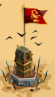
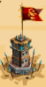
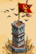

Tour du désert
Présentation
Equivalent des fieffé coquin au royaaume du glacier éternel, ils sont disposés partout. Commence vers le lvl 35 et 61 maximum. Le principe est le même : après une ou plusieurs attaque(s), le niveau augmente comme le butin.
A partir du niveau 70 (joueur) une ressource s'ajoute au butin classique (bois-pierre-bouffe) : l'huile d'olive.
Apparence
3 apparences sucessives, en fonction du niveau :
AU début (lvl 35) 
Dès le lvl 45 environ 
lvl 52-max : 
Attaque
En pratique